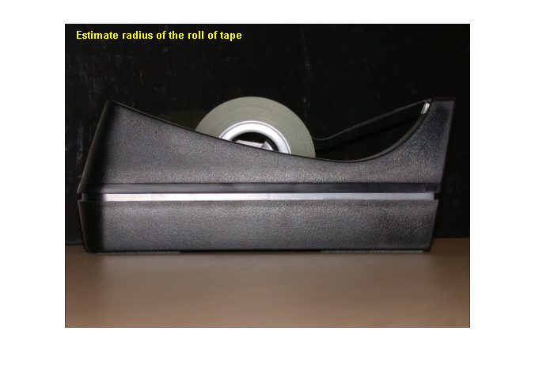
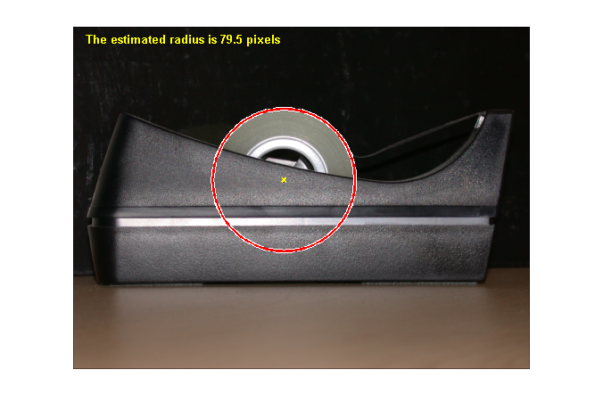

Measuring the Radius of a Roll of Tape
This example shows how to measure the radius of a roll of tape, which is partially obscured by the tape dispenser. Utilize imfindcircles to accomplish this task.
Contents
Step 1: Read Image
Read in tape.png.
RGB = imread('tape.png'); imshow(RGB); hTxt = text(15,15,'Estimate radius of the roll of tape',... 'FontWeight','bold','Color','y');
Step 2: Find the Circle
Find the center and the radius of the circle in the image using imfindcircles.
Rmin = 60;
Rmax = 100;
[center, radius] = imfindcircles(RGB,[Rmin Rmax],'Sensitivity',0.9)
center = 236.9291 172.4747 radius = 79.5305
Step 3: Highlight the Circle Outline and Center
% Display the circle viscircles(center,radius); % Display the calculated center hold on; plot(center(:,1),center(:,2),'yx','LineWidth',2); hold off; delete(hTxt); message = sprintf('The estimated radius is %2.1f pixels', radius); text(15,15,message,'Color','y','FontWeight','bold');